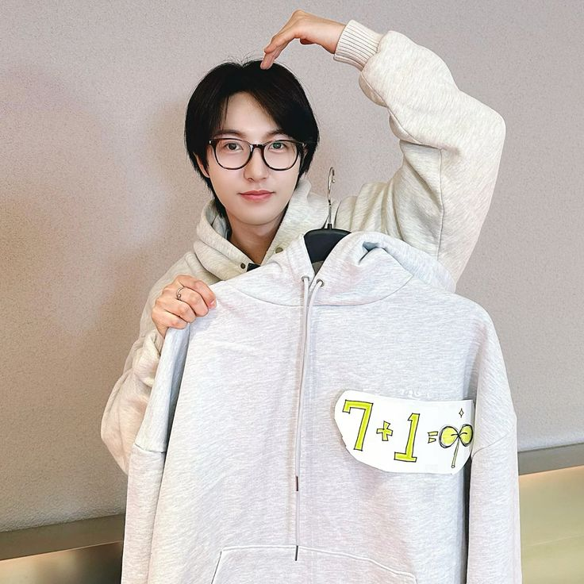

DREAMIES
NCT DREAM
Mark | Renjun | Jeno | Jaemin| Chenle | Jisung
NCT Dream (엔시티 드림) adalah sub-unit ketiga dari boy band asal
Korea Selatan. NCT, yang khusus beranggotakan remaja dengan usia belasan tahun.
Unit ini melakukan debutnya pada 25 Agustus 2016 dengan lagu "Chewing Gum".
RENCHIN
YELLOW BOY
Huang Renjun | Jilin, Tiongkok
Huáng Rénjùn adalah seorang idol kpop. Ia adalah
anggota grup vokal laki-laki NCT dan sub-unit NCT Dream,
Renjun adalah salah satu member yang di puji karena multitalent dan visualnya
yang memukau. Renjun memiliki visual yang unik seperti fairy.
Ia juga mendapatkan julukan pretty boy, karena wajahnya yang cantik dan manis.
Bahkan, renjun masuk 100 most handsome face of kpop artist.

BLOOD OF ART
THERAPY
huang Renjun | habbits
Tidak hanya memiliki suara yang indah, dan visual yang memukau.
Renjun pandai dalam hal musik dan seni, lukisan atau gambar yang
ia buat sangat lah indah, renjun juga pandai dalam mengambil gambar
Di kesempatan yang baik, ia menunjukkan keahlian nya dengan mendesain
Hoodie untuk para member dan fans. Selain hobi melukis juga bagian dari
terapi yang ia jalani dari trauma mental dan kecemasan yang dihadapinya.